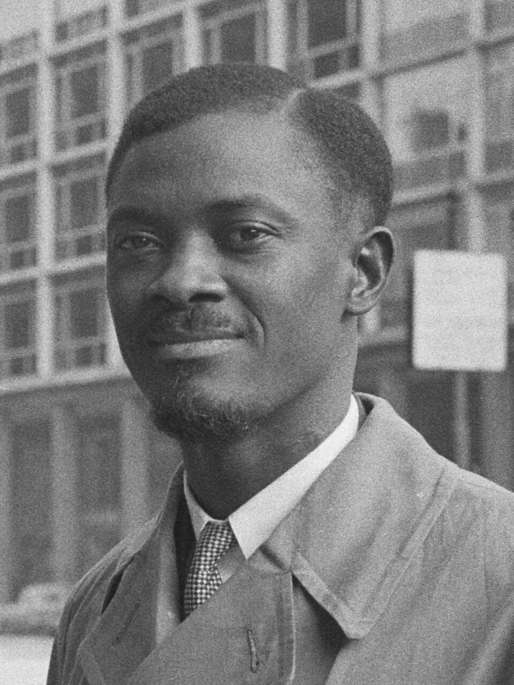

A42-POL-029 // HISTORICAL CLAIM REVIEW
Patrice Lumumba's Killing and the Congo Crisis
Assessment: Lumumba's murder was a politically coordinated killing involving Katangan officials and Belgian participation; Belgian responsibility is officially acknowledged.


The precise allegation
Congolese prime minister Patrice Lumumba was transferred to Katanga and killed in January 1961 by Katangan authorities with Belgian involvement. Belgian officials had a role in his removal and the crisis around his death; US officials considered his elimination and the CIA prepared a plan, but the evidence does not show that a CIA poison plot killed him.
Chronology and political context
Lumumba's government faced army mutiny, secession in Katanga, and Cold War intervention after independence in 1960. President Joseph Kasa-Vubu dismissed him; Colonel Mobutu's forces detained him. He was sent to Katanga and murdered with two associates on January 17, 1961. Belgian and United Nations actions shaped his custody and transfer, while international protests followed.
Primary historical record
The Belgian parliamentary commission's 2001 report concluded that Belgian officials bore moral responsibility and documented direct participation by Belgian personnel around the transfer and killing. UN records and US declassified material document diplomatic maneuvering and CIA planning. These records differ in scope: they establish involvement and intent in some quarters, not a single unified conspiracy by all Western governments.
Corroboration and contrary evidence
Multiple sources converge on the transfer to Katanga, the role of local authorities, Belgian advisers, and the concealment of the bodies. A Belgian commission, declassified US records, and scholarship by Ludo De Witte and Emmanuel Gerard provide partly independent accounts. They support a conspiracy around removal and killing while complicating popular claims of a direct CIA execution operation.
What remains uncertain
The exact chain of orders among Katangan leaders and Belgian officials, and what each US decision-maker knew at each stage, remain contested. CIA discussions of poison are disturbing but do not prove poison was used. Cold War records are incomplete, and some government summaries are retrospective, defensive, or redacted.
Calibrated verdict
Lumumba's murder was a politically coordinated killing involving Katangan officials and Belgian participation; Belgian responsibility is officially acknowledged. US hostility and covert planning are documented, but direct CIA responsibility for the actual killing is not established. The strongest account identifies converging local and foreign roles without treating every hostile actor as operationally united.
What evidence could change this assessment
Full Belgian, Congolese, and US operational records, especially communications immediately before the transfer and murder, could refine command responsibility. Forensic records or independently witnessed evidence identifying the killers' orders would clarify the final chain. Evidence of a poison's actual administration would be necessary to validate the often-repeated CIA-poison version.
Sources and source limits
- Belgian Parliamentary Commission — Lumumba inquiry reportOfficial inquiry concluded Belgian officials bore moral responsibility; it is a parliamentary retrospective and focuses on Belgian conduct.
- U.S. Senate — Church Committee, Alleged Assassination Plots Involving Foreign LeadersPrimary congressional investigation documents CIA plans and policy; does not establish that a CIA plot caused Lumumba's death.
- U.S. National Archives — Foreign Relations of the United States, CongoDeclassified diplomatic records illuminate US policy; records are incomplete and disclose policy documents, not every covert channel.